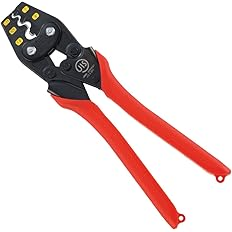
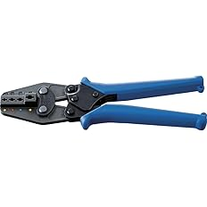

【現場で使ってる】電気工事士おすすめ圧着工具6選
電気工事の現場で実際に使っている圧着工具を紹介します。
裸圧着端子、絶縁被覆付圧着端子、CE端子、フェルール、LANかしめなど、
端子や用途によって使う工具はかなり変わります。
自分も最初は圧着工具は1本で何とかなるかなと思っていましたが、 実際は役割が全部違うので、用途に合った物を使い分けた方が確実で仕上がりも安定します。
この記事では、実際に現場で使っている圧着工具をベースに、 どの作業にどの工具が向いているか分かりやすくまとめています。
※電気工事士が実際に現場で使っている圧着工具を、用途別にまとめています。
圧着工具は1本で全部やるより、用途ごとに分けた方が確実です
裸圧着端子、絶縁被覆付圧着端子、CE端子、フェルール、LANかしめは、全部役割が違います。
無理に1本で何でもやろうとするより、用途に合った物を使った方が仕上がりも確実で、作業もしやすいです。
今回紹介している1〜6は全部役割が違っていて、現場ではどれも必要になります。
どれも使いやすくて壊れにくいので、用途ごとにそろえておくとかなり助かります。
自分の作業内容に近いものがあれば、参考にしてみてください。
圧着工具は用途で使い分けるとかなりやりやすいです
圧着工具は見た目が似ていても、実際に使う端子が違うと全然役割が違います。
裸圧着端子を打つ工具と、絶縁被覆付端子を打つ工具では、使い方も仕上がりも変わります。
CE端子はCE端子向けの工具が一番使いやすいですし、フェルールはフェルール専用の形状の方が仕上がりがきれいです。
LANもかしめたあとにチェッカーで確認するところまでセットで考えた方が安心です。
自分は用途ごとに分けて使っていますが、その方が失敗もしにくく、現場での安心感もかなり違います。
圧着は適当にやると怖いところなので、用途に合った物を使うのが大事です。
『ロブテックス ミニ圧着工具 AK2MA』

小型で握りやすく、裸圧着端子で一番使いやすいモデル
この工具の特にいいところ
小型で握りやすく、かなり使いやすいです。
丸端子、Y端子、棒端子などの裸圧着端子で基本的によく使っています。
裸圧着端子用でまず1本使いやすい物を選ぶなら、このAK2MAがかなり使いやすいです👇
これは自分が裸圧着端子でかなりよく使っている圧着工具です。
小型で握りやすく、現場でも取り回しが良いので出番が多いです。
基本的には丸端子、Y端子、棒端子などの裸圧着端子で使っています。
小さいのにしっかり使いやすく、持っていて使う場面がかなり多いです。
裸端子用で何を使うか迷った時は、まずこれを持っておけばかなりやりやすいと思います。
自分の中ではかなり安心して使える1本です。
良かったところ
- 小型で握りやすい
- 裸圧着端子でかなり使いやすい
- 丸端子、Y端子、棒端子で出番が多い
- 取り回しが良く使いやすい
裸圧着端子用で使いやすい工具を探しているなら、このモデルを選んでおくとかなり安心です👇
▶ 『AK2MA』の価格をAmazonでチェックする 裸圧着端子用で一番使いやすい『マーベル 圧着工具 MH-14』

14sqまで対応できる、たまに太物を打つ人向け
この工具の特にいいところ
AK2MAより大きく、1.25sq・2sq・5.5sq・8sq・14sqまで圧着できます。
14sqをたまに打つ人にはかなり使いやすいです。
たまに14sqまで打つことがあるなら、このMH-14を持っておくとかなり助かります👇
これは裸圧着端子用の中でも、少し太いサイズまで対応したい時に使いやすい工具です。
AK2MAより大きめですが、その分対応できる範囲が広いです。
1.25sq、2sq、5.5sq、8sq、14sqまで圧着できるので、 14sqをあまり打たないけど、たまに出るという人にはかなりちょうどいいと思います。
自分の中では、普段使いの小型工具とは別に、少し太い物まで見たい時に使うイメージです。
対応範囲を広げたい人にはかなり向いています。
こんな人におすすめ
- 14sqをたまに打つ人
- 対応範囲が広い物を持っておきたい人
- 裸圧着端子用をサイズ別で使い分けたい人
- 少し太い物まで対応したい人
たまに太めの裸端子も打つなら、このモデルを選んでおくとかなり使いやすいです👇
▶ 『MH-14』の価格をAmazonでチェックする 14sqをたまに打つならこれ『ロブテックス 絶縁被覆付圧着端子用 AK112MA』

絶縁被覆付圧着端子で意外と出番が多いモデル
この工具の特にいいところ
直線スリーブや差込形ピン端子など、絶縁被覆付圧着端子用でかなり使いやすいです。
意外と出番があるので、持っておくと助かります。
絶縁被覆付圧着端子を使うなら、このAK112MAがかなり使いやすいです👇
これは絶縁被覆付圧着端子用として使っている工具です。
直線スリーブや差込形ピン端子などで使うことがあり、意外と出番があります。
裸端子用とは役割が違うので、こういう物は専用工具を使った方が安心です。
合っている工具を使った方が仕上がりも安定して、余計な失敗もしにくいです。
現場では毎日ではなくても、持っておくと助かる場面がちゃんとある工具だと思います。
絶縁被覆付圧着端子を触る人にはかなり向いています。
こんな人におすすめ
- 絶縁被覆付圧着端子を使う人
- 直線スリーブや差込形ピン端子を触る人
- 用途ごとにきちんと工具を分けたい人
- 意外な出番に備えておきたい人
絶縁被覆付圧着端子を使うなら、このモデルを選んでおくとかなり安心です👇
▶ 『AK112MA』の価格をAmazonでチェックする 絶縁被覆付圧着端子ならこれ『ロブテックス 絶縁被覆付閉端接続子用 AK25MA』

CE端子を打つなら一番使いやすいモデル
この工具の特にいいところ
CE端子を圧着するなら、このAK25MAが一番使いやすいです。
CE1・CE2・CE5でだいたい事足ります。
CE端子を圧着するなら、このAK25MAを持っておくのがかなり安心です👇
これはCE端子用として使っている工具で、自分の中では一番使いやすいと感じています。
CE端子を打つなら、かなり素直にこれをおすすめしやすいです。
CE1・CE2・CE5でだいたい事足りるので、現場で必要になるところはかなりカバーしやすいです。
CE端子はこれ用の工具を使った方がやっぱり安心感があります。
CE端子を使う場面があるなら、持っておく価値はかなり高いと思います。
自分の中では、CE用としてかなり信頼している1本です。
良かったところ
- CE端子で一番使いやすい
- CE1・CE2・CE5で事足りる
- CE端子作業でかなり安心して使える
- 専用工具として持つ価値が高い
CE端子を圧着するなら、このモデルを選んでおくとかなりやりやすいです👇
▶ 『AK25MA』の価格をAmazonでチェックする CE端子を打つならこれ『Klein Tools 34055 フェルール圧着工具』

フェルール圧着でかなり使いやすい4面タイプ
この工具の特にいいところ
4面に引っ掛かりができる形で圧着できるので、とても使いやすいです。
フェルール用としてかなり安心して使えます。
フェルールをきれいに圧着したいなら、この34055がかなり使いやすいです👇
これはフェルール用として使っている工具です。
4面に引っ掛かりができる形で圧着できるので、かなり使いやすいと感じています。
フェルールは専用工具を使った方が仕上がりが安定しやすく、見た目もきれいにしやすいです。
こういう部分はやっぱり専用工具の良さが出ます。
調節可能なラチェット付きなのも使いやすく、フェルール作業をする人にはかなり向いています。
自分の中ではフェルール用としてかなり信頼している工具です。
こんな人におすすめ
- フェルールを使う人
- 4面でしっかり圧着したい人
- 仕上がりを安定させたい人
- フェルール用を専用で持ちたい人
フェルールを使うなら、このモデルを選んでおくとかなり使いやすいです👇
▶ 『Klein Tools 34055』の価格をAmazonでチェックする フェルール用ならこれ『サンワダイレクト かしめ工具 500-LAN-TL1』

LANかしめはこれがあればいいと思えるモデル
この工具の特にいいところ
LANかしめはこれがあればかなりやりやすいです。
かしめたあとにチェッカーで確認するところまでセットで考えると安心です。
LANかしめをするなら、この500-LAN-TL1を持っておくとかなりやりやすいです👇
これはLANかしめ用として使っている工具です。
LANかしめはこれがあればいいと思えるくらい使いやすいです。
かしめたら終わりではなく、ちゃんとチェックするところまでやる方が安心です。
自分はチェッカーに『HIOKI LANケーブルハイテスタ 3665』を使って確認しています。
LANは見た目で大丈夫そうでも、確認してみると違うことがあるので、 かしめ工具とチェッカーはセットで考えておくとかなり安心です。
LANかしめで使っている物
- かしめ工具：サンワダイレクト 500-LAN-TL1
- チェッカー：HIOKI LANケーブルハイテスタ 3665
- かしめたあとにチェックしてOKを確認
LANかしめをするなら、このモデルを選んでおくとかなり使いやすいです👇
▶ 『500-LAN-TL1』の価格をAmazonでチェックする LANかしめ用ならこれ ▶ 『HIOKI 3665』の価格をAmazonでチェックする LANチェックに使っているチェッカーどれを選べばいい？
使う端子や作業内容に合わせて選ぶと、かなり使いやすくなります。
| 機種 | 向いている作業 | 特徴 |
|---|---|---|
| 『AK2MA』 | 丸端子・Y端子・棒端子などの裸圧着端子 | 小型で握りやすく、かなり使いやすい |
| 『MH-14』 | 1.25sq〜14sqまでの裸圧着端子 | たまに14sqまで打つ人向け |
| 『AK112MA』 | 直線スリーブ・差込形ピン端子など | 絶縁被覆付圧着端子用で意外と出番あり |
| 『AK25MA』 | CE1・CE2・CE5のCE端子 | CE端子ならこれがかなり使いやすい |
| 『Klein Tools 34055』 | フェルール圧着 | 4面で引っ掛かりができ使いやすい |
| 『500-LAN-TL1』 | LANかしめ | LANかしめ用としてかなり使いやすい |
比較してみて、自分の作業に合うものがあれば、そのモデルを選べばOKです。
圧着工具は全部役割が違うので、無理に1本で何でもやるより、用途ごとに分けた方が確実です。
圧着工具は用途に合った物を使うとかなり安心です
裸圧着端子、絶縁被覆付端子、CE端子、フェルール、LANかしめは、それぞれ役割が違います。
用途に合った工具を使うだけで、仕上がりも安定しやすく、現場での安心感もかなり変わります。
圧着は適当にやるより、役割ごとに工具を分けておいた方が確実にやりやすいです。
自分の作業内容に合う物をそろえておくと、現場でかなり助かります。
作業別に工具を揃えたい人はこちら
配線・加工・切断など、用途ごとに工具をまとめています。
他の工具もまとめてチェック
このページ以外にも、現場で使っている工具を用途別にまとめています。
まとめてチェックしたい方はこちら。
※当サイトはAmazonアソシエイト・プログラムに参加しており、適格販売により収入を得ています。